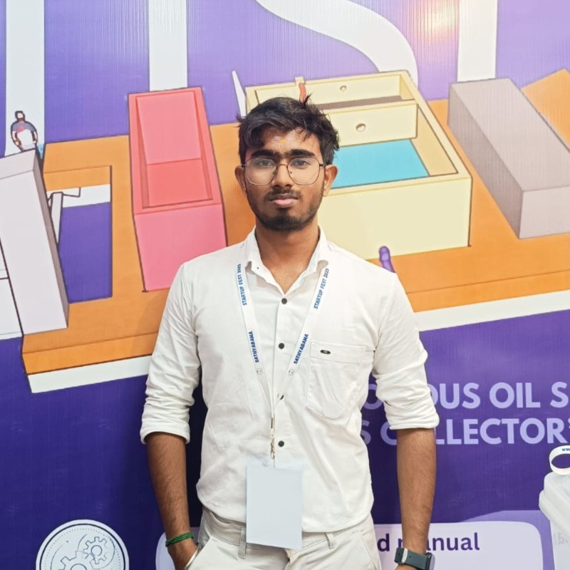

Computer Science Engineer specializing in IoT, Robotics, UI/UX, and AI-driven real-world systems.
I am a Computer Science Engineering student at Sathyabama Institute of Science and Technology with strong hands-on experience in robotics, IoT, and UI/UX design. I specialize in developing intelligent, real-world systems that seamlessly integrate hardware and software.
My work spans across autonomous rovers, embedded systems, AI-assisted applications, and user-centered interface design. I enjoy solving practical problems by combining low-level hardware control with high-level software logic, focusing on scalability, reliability, and performance.
I am highly motivated to learn, experiment, and collaborate on innovative projects, and I actively seek opportunities where I can contribute to impactful engineering solutions while continuously improving my technical and design skills.
Autonomous delivery rover with navigation, load handling, and IoT communication.
ESP32-based oil-water separation system for marine environments.
Autonomous cleaning rover with obstacle avoidance.
Complete mobile app interface designed in Figma.
UI/UX Designer Intern – Interface design & usability improvements.
Software Engineer Intern – Application logic & workflows.